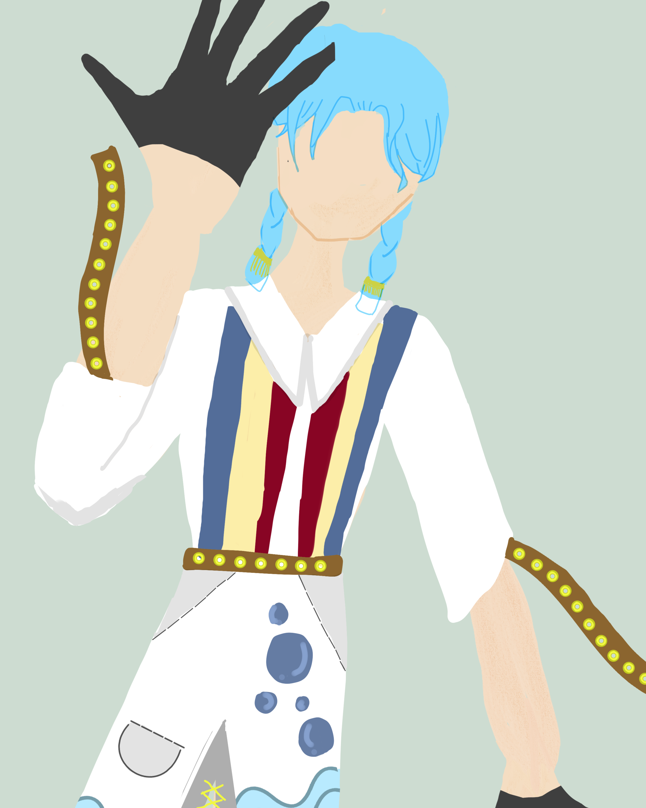
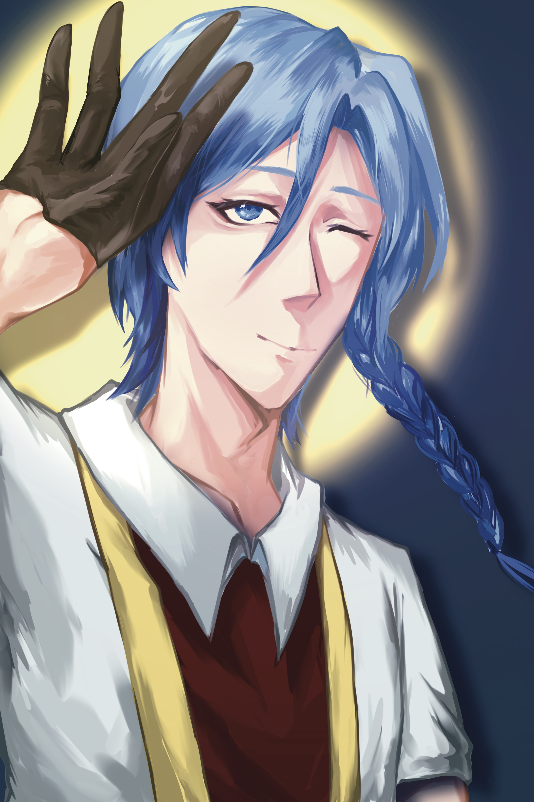
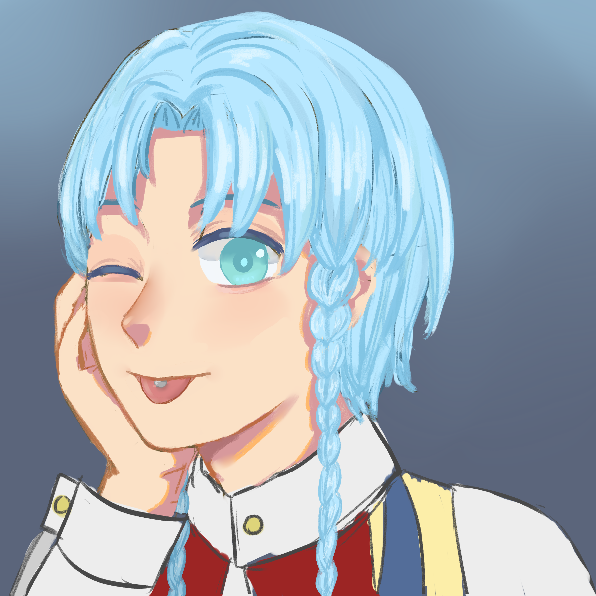
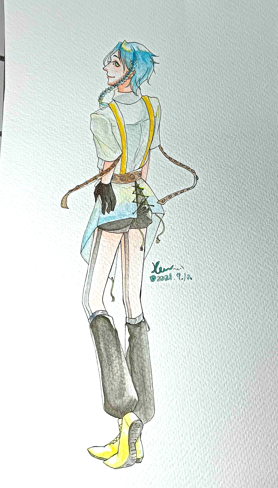

Vosto全域資料庫
Vosto全域資料庫
「族人......不見了。」
澺雙似乎總是孤單一人，過了大半輩子，最終平靜的接受死亡。
| 澺雙 | |
|---|---|
 |
|
| 姓名 | 澺雙 |
| 生日 | 每年2月的第三個星期日 *他們是這般紀錄誕辰的 |
| 存活時間 | 48年 |
| 性別 | 男 |
| 身體資訊 | 175公分 | 67公斤 |
| 愛好 |
小蝦米 小魚乾 吻仔魚 菜葉類 |
| 不喜 |
肉類 辣 |
該條目正在施工中。
兩種型態，一種是鯨魚，另外一種是人。游泳對他來說是最擅長的事情，即使是在人的狀態也是。
鯨：體長八米、重九噸，背部是深灰色的，腹部呈白色，胸鰭以上或頭部以後都有一個淡色的山形斑紋。胸鰭上亦有白色或淡色的斑紋，這個斑紋差不多覆蓋整個侏儒小鬚鯨的胸鰭。（來源：維基百科。）
人：皮膚白皙，一頭淺藍色的短髮，瀏海中分，有點像是淺灘海水的顏色，非常柔順、亮麗，有兩撮小辮子在前面，長至胸前。
由於他的族群文化，舌頭上穿有舌環。
藍綠色的虹膜，看見好奇的事，一雙眼睛睜的頗大，精靈的轉來轉去，那雙清澈的雙眼簡直讓人沉迷。總是炯炯有神，讓人好奇他是否有無限的活力，長長的藍色眉毛隨著他眨眼的頻率上下的擺動著。
一顰一笑接表現在臉上，屬於不容易隱藏思緒的人。
小巧的鼻子總是在喝醉時紅著鼻頭，薄薄的嘴唇總是看上去濕潤且紅通通，極具誘人。修長而好看的手指，精而狀實的體態。
平時心情總是很好，簡單不過的事情都能把他逗樂，不高興的事情也能找他，是個移動式心情垃圾桶，用那似陽光的微笑照亮對方，曾經對於陸地有著許多的好奇心。
生氣或受委屈時，總因為話憋的滿肚子即使不想哭，眼淚還是會不爭氣的流出，但不會持續太久，鮮少時後會有強烈征服慾。
通常都是溫柔的對待他人，柔中有剛，有自己所堅持的事情，喜歡聽別人談論有關自己的事情，有時還會因為同情對方而掉淚，但對自己非常堅強，遇到任何事情都會咬緊牙關撐下去。
星球文化
在他的星球上，亡者會被送到了一個地方，那裡很暗但身在其中的人卻看的清楚。特別的一點是所有人都缺少身體的某些部分，有些是外觀上，有些是內在。
在那個地方，會出現一些波光粼粼的物質，它們可以跟失去物件的人們結合在一起，似乎是意象化的動物，是死去的動物靈魂，但是卻願意幫助準備進入下一世的人活下去，原因待釐清（也許對他們來說人類也是動物）。
如果人失去頭跟身體，只剩手腳，那些波光粼粼的物質就會變成頭跟身體照那個人的意識移動，但是也會隨著人的意識暫時消逝。
空間裡頭有一些跑很快的東西，長的很像人，但駝背很嚴重，手都快碰到地板，臉也長得很可怕，一直嚷嚷著說：「我要吃掉那些東西……！食物來了……！」他們的食物就是那些波光粼粼的物質，或是殘缺的人。
動物（物質）選中了一個人以後，幸運從裡面逃出來後會獲得下一世的機會，同時保護那個人很長一段時間，直到他的心理不用再受到保護，因為失去的通常不會長出來，所以動物要讓人的心理強壯，倍保護的人，如果有特殊能力，那段時間可以用心音互相對話。
一開始澺雙選中了一個人，那時他還是隻甲蟲，他幫助那個人從那個房間逃出來，保護過一段時間後，自己也離開去轉生，轉生成了鯨魚，只能一直待在海裡，他花很多時間找到那個人，因為澺雙有預感那個人還沒死，在那個人到海邊的同時，他們的心理互相聯結。
故事
澺雙找回變成波光粼粼物質的能力，那種能力可以讓他變成人在陸地上行走，甚至維持小鬚鯨的型態、沉重的身體浮在陸地上，並且不用海水，此時路人是看不到的，因為他們之間並沒有相互連結。
從他24歲以後，便沒有遇過同類了
澺雙生活的星球已經遭到重度開發，在他小時候20歲之前，其實很繁華，岸上都是人們，可以想像大航海時代的漁港，有點類似地球，但陸地並不多，更多的是一望無際的海洋，人們走後，留下了老人與小孩，還有一些不願意走的人們，但為了榨乾星球的最後一滴價值，所以沒有半點收斂，這些澺雙只能大略理解，從他們的海洋學校。
1/3的族人被抓去給其他種族充當玩樂，不一定是人類。
1/3的人死去了，進入世界觀裡面的輪迴。
1/3的人去尋找更好的出路，或融入其他的族群。
剩下的非常少部份的人們不想離開，所以獨自留下，也許一開始還有聯絡，但隨著時間也分別了。
澺雙一輩子都沒去過其他星球，他十分鍾愛自己生活的海域，頂多就是走到距離岸上五公里以內的範圍，更多的是，待在海洋，海裡有海洋族（聯邦給他們取的總稱）他們視天然礁石、洞穴為城堡，所以其實沒有實際的人造建築物，大型的海洋生物（如他）就把海洋、洋流當作被子與床，直接睡覺。
在過去，他的族群有一群長老（大概30隻）與5隻女巫（扮演策劃未來與逝去族人之對話），全族會一起養育孩童，要開會就發出鯨魚叫聲號召同類過來。
澺雙接觸過的角色只有安斯艾爾和白琰程。
安斯艾爾：澺雙上岸後第一個遇到的人類，他無法給澺雙一個合理的身分存在於聯邦，但好在他出現時這片土地已經變成失落之海洋（過度開法的地方會用失落的ＯＯ當作名稱）了，而澺雙也不想離開自己的海洋，安斯艾爾教會他上岸生活的一切，他的辮子就是安斯艾爾教的，安斯艾爾也有一樣的辮子，澺雙對他的態度就是很好的人類、超級好朋友。
白琰程：有些同病相憐的意味，白琰程來自失落的森林，兩人第一次見面是在沙灘（離海有一段距離的沙灘），白琰程看他自己一個人在生火，卻又很害怕的樣子，覺得有趣，所以就上前搭話了，兩人烤了魚來吃，本來白琰程想套話，但澺雙自己像倒垃圾直接一坨全部倒出來，白琰程認為對方太天真了，所以也把自己的故事掐頭去尾告訴對方。
安斯艾爾與白琰程都是他的朋友，但他們倆人有些勢不兩立，因此沒有同時出現過，只在澺雙過世時，白琰程找到安斯艾爾去弔詭。
🖼️萩餅味魚乾

🖼️Sheep Sheep

🖼️遺失
